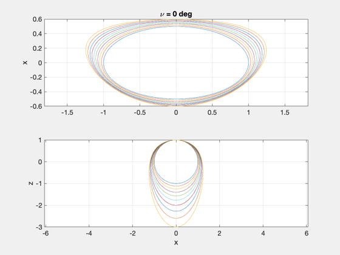
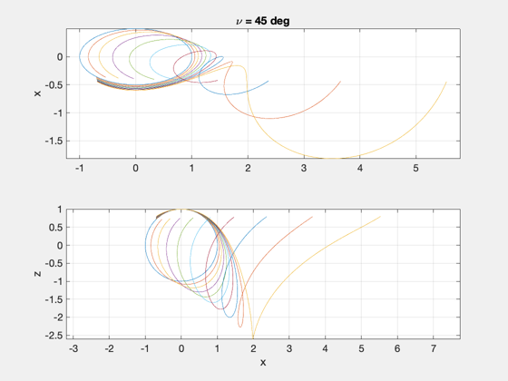
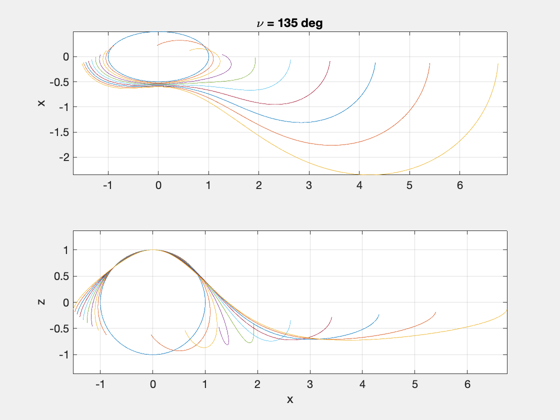
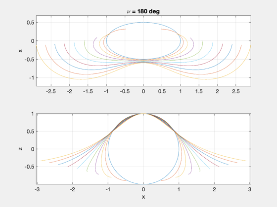
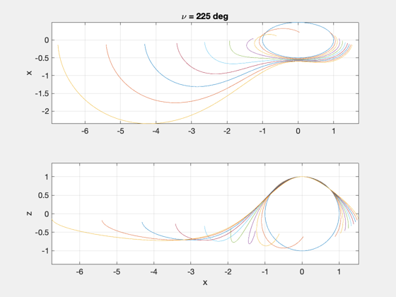
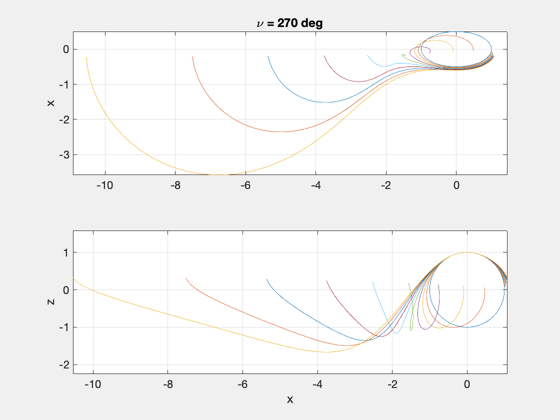
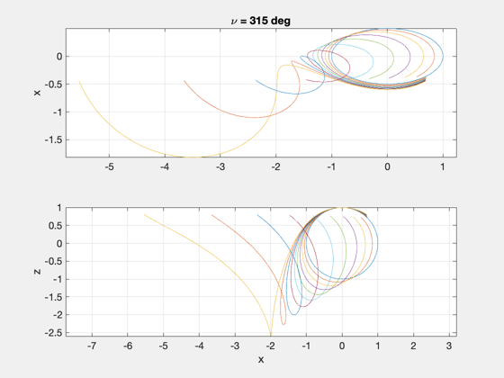

Demonstrate how relative motion changes when the same relative state is initialized at different true anomalies.
Since version 7.
-------------------------------------------------------------------------
References: Inalhan, Tillerson, How, "Relative Dynamics and Control of
Spacecraft Formations in Eccentric Orbits", Journal of Guidance,
Control & Dynamics, Vol.25, No.1, Jan-Feb 2002.
-------------------------------------------------------------------------
See also FFEccLawdensEqns
-------------------------------------------------------------------------
nu = 0:pi/180:2*pi;
nP = length(nu);
e = linspace(.00001,.5,10);
z0 = 1;
dy0 = 1;
xH0 = [0;0;z0;0;dy0;0];
nu0 = [0:45:315]*pi/180;
nE = length(e);
nP = length(nu);
for th0 = nu0
x = zeros(nE,nP);
y = zeros(nE,nP);
z = zeros(nE,nP);
for i=1:nE,
xH0(1) = -xH0(5)*(1+e(i))/(2+e(i));
xH = FFEccLawdensEqns(xH0,th0,nu,e(i));
x(i,:) = xH(1,:);
y(i,:) = xH(2,:);
z(i,:) = xH(3,:);
end
NewFig('FFEccInitDemo');
subplot(211)
plot(y',x'); ylabel('x'); grid on, axis equal, zoom on
title(['\nu = ',num2str(round(th0*180/pi)),' deg']);
subplot(212)
plot(y',z'); ylabel('z'); xlabel('x'); grid on, axis equal, zoom on
end
 

    